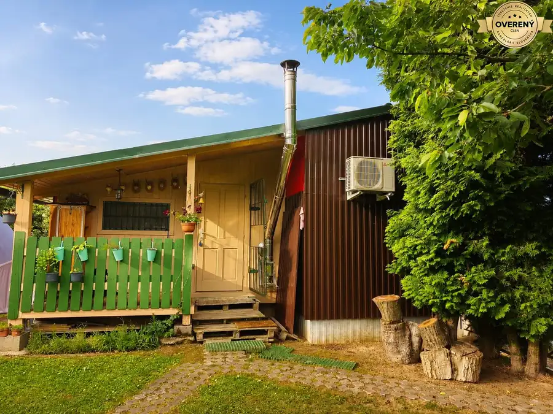
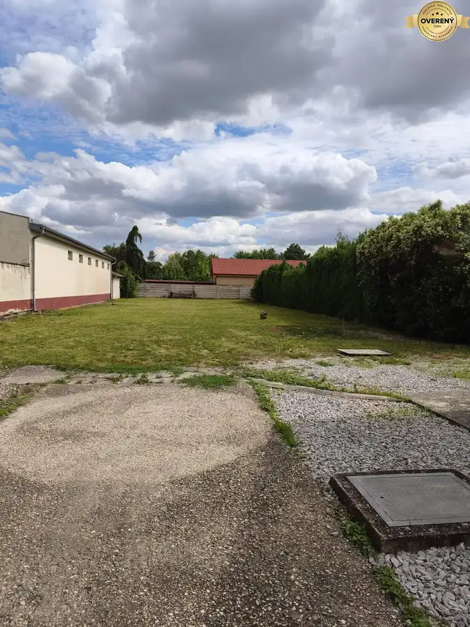

Na predaj záhrada s chatou v záhradkárskej oblasti Šaľa - Veča
Šaľa
- Plocha377 m²
- Poschodie0.
- Vlastníctvoosobné
O nehnuteľnosti
Ponúkame na predaj udržiavanú záhradu s drevenou chatou v tichej a vyhľadávanej záhradkárskej oblasti. Je ideálnym miestom na oddych, víkendovú rekreáciu aj pestovanie vlastného ovocia a zeleniny.
Pozemok
s výmerou 377 m² je dlhodobo starostlivo udržiavaný a ponúka bohatú výsadbu ovocných stromov, kríkov aj okrasných rastlín.
Nájdete tu veľkú čerešňu, jablone, hrušky, slivku, dve broskyne, ríbezle, egreše a vinič.
Chata
• drevená chata
• plechová strecha
• samostatná náraďovňa
• elektrina
• chemické WC
Pozemok
• rozloha: 377 m²
• príjemné vonkajšie posedenie
• rolovacia markíza poskytujúca tieň
• okrasné kríky, kvety a ruže pozdĺž oplotenia
• prístup po spoločnej príjazdovej ceste
Inžinierske vybavenie
• elektrina
• dve studne:
o klasická studňa
o studňa s čerpadlom
Výhody nehnuteľnosti
• pokojná lokalita vhodná na oddych
• priestranný a udržiavaný pozemok
• vyrastené rodiace ovocné stromy
• ideálne podmienky na pestovanie ovocia, zeleniny aj kvetov
• možnosť rekonštrukcie alebo úpravy chaty podľa vlastných predstáv
• výborné miesto na víkendový relax aj aktívne záhradkárčenie
Ak hľadáte miesto, kde si oddýchnete od ruchu mesta a zároveň si dopestujete vlastné ovocie a zeleninu, táto záhrada je skvelou voľbou.
V prípade záujmu o viac informácií alebo obhliadku nás neváhajte
kontaktovať na tel. č.
Parametre
| Dátum zverejnenia | 1. 7. 2026 |
|---|---|
| El. napätie | 230V |
| Internet | nie |
| Inžinierske siete | nie |
| Kanalizácia | nie |
| Káblová televízia | nie |
| Odvoz odpadu | nie |
| Plyn | nie |
| Poschodie | prízemie |
| Prístupová cesta | neupravená cesta |
| Rozloha pozemku | 377 m² |
| Terén | rovina |
| Vlastníctvo | osobné |
| Voda | studňa |
Kde to je
Mohlo by Vás zaujímať

ZáhradyNové10 55 000 €Na predaj záhrada s chatkou na celoročné bývanie – Sereď, pri Váhu Sereď 451 m² Objavte pokojné bývanie v prírode s výhodami mesta! Ponúkame Vám na predaj priestrannú záhradu o rozlohe 450 m² v osobnom vlastníctve, situovanú v…
Rodinné domyNové7 240 000 €Na predaj rodinný dom s výborným potenciálom v Galante Galanta 4-izbový95 m² Pozemok 1099 m² • Zastavaná plocha 106 m² • Vhodný aj na podnikanie alebo prenájom Ponúkame na predaj starší, zrekonštruovaný 4 izbový rodinný dom v…